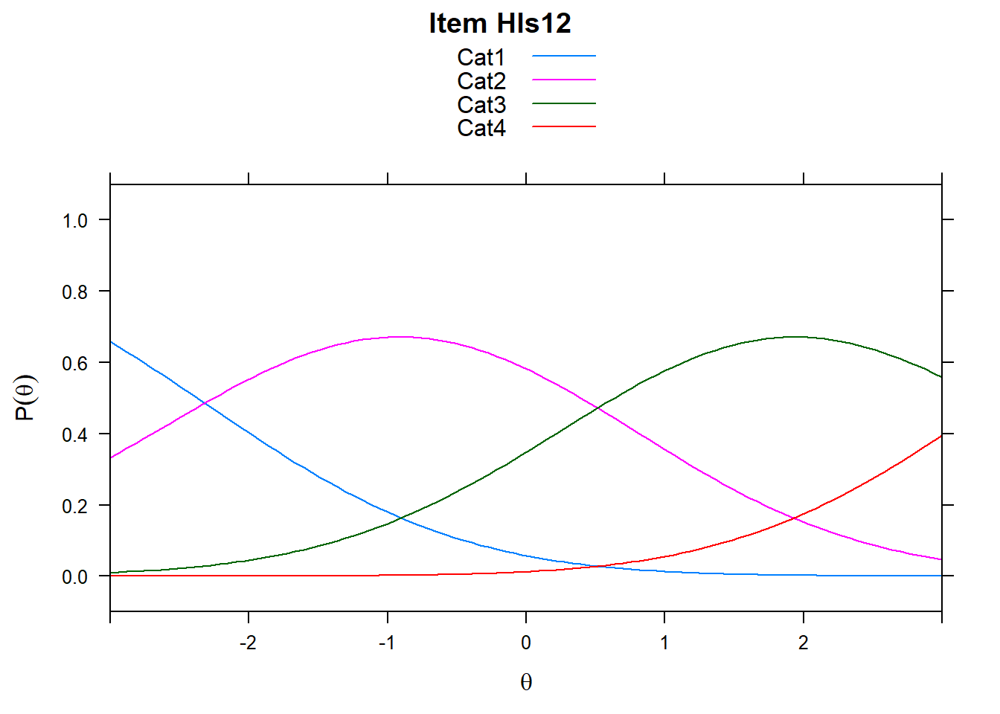
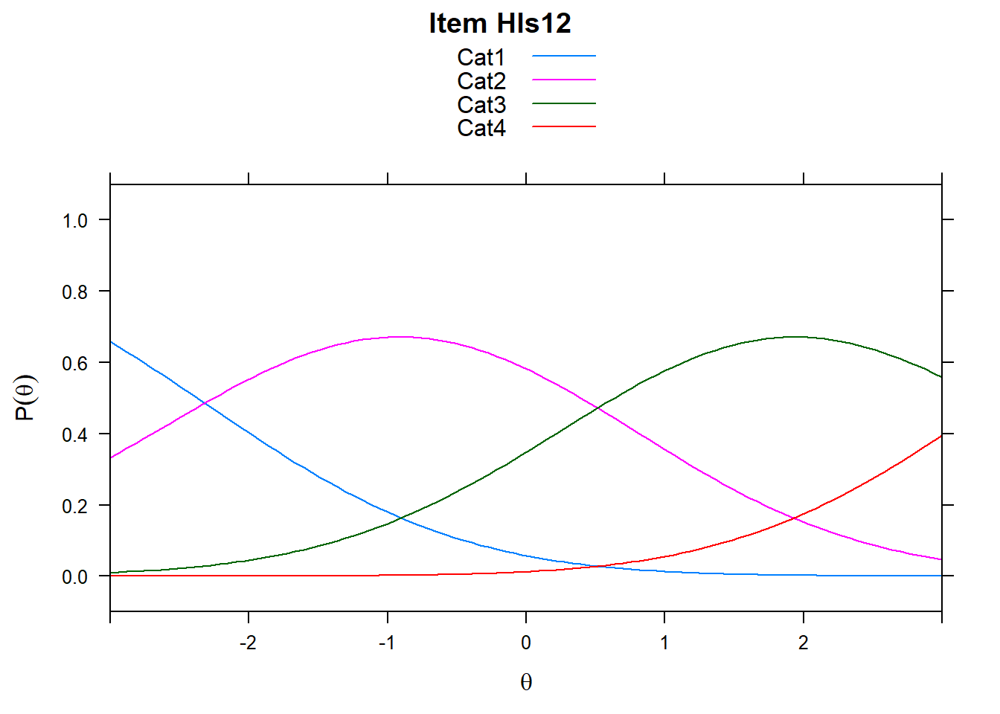

Chapter 4 Polytomous Items
4.1 Polytymous item types (anything with a rating Scale)
We can use the Rasch Partial Credit Model (PCM) to look at polytomous data too. We’ll start by bringing in the polytomous items from the survey. Note that TAM needs the bottom category to be coded as 0, so you may need to recode.
hls2 <- read.csv("hls_poly_scale.csv")## Hls1 Hls2 Hls3 Hls4 Hls5 Hls6 Hls7 Hls8 Hls9 Hls10 Hls11 Hls12 Hls13
## 1 1 1 1 0 1 1 0 2 1 1 2 1 1
## 2 2 1 1 1 2 1 1 2 1 1 2 2 2
## 3 0 1 1 1 1 1 1 2 1 0 1 2 1
## 4 1 1 0 0 2 1 0 1 0 0 2 1 1
## 5 1 1 0 0 1 0 0 2 0 0 2 2 2
## 6 1 1 1 1 2 1 1 1 1 0 2 2 2
## Hls14 Hls15 Hls16
## 1 0 1 1
## 2 1 1 2
## 3 1 1 1
## 4 1 2 1
## 5 1 1 2
## 6 1 2 1View(hls2)TAM will automatically run the PCM when our data is polytomous. There are other model-types for polytomous data such as the rating scale model. This may be more appropriate for Likert-type items. For more information, read TAM documentation or see the reference list (Bond & Fox, 2007)
## ------------------------------------------------------------
## TAM 3.0-21 (2018-12-10 14:36:52)
## R version 3.5.2 (2018-12-20) x86_64, mingw32 | nodename=LAPTOP-K7402PLE | login=katzd
##
## Date of Analysis: 2019-11-27 09:12:31
## Time difference of 0.240279 secs
## Computation time: 0.240279
##
## Multidimensional Item Response Model in TAM
##
## IRT Model: 1PL
##
## Call:
## tam.mml(resp = resp)
##
## ------------------------------------------------------------
## Number of iterations = 57
## Numeric integration with 21 integration points
##
## Deviance = 8371.25
## Log likelihood = -4185.63
## Number of persons = 317
## Number of persons used = 317
## Number of items = 16
## Number of estimated parameters = 49
## Item threshold parameters = 48
## Item slope parameters = 0
## Regression parameters = 0
## Variance/covariance parameters = 1
##
## AIC = 8469 | penalty = 98 | AIC=-2*LL + 2*p
## AIC3 = 8518 | penalty = 147 | AIC3=-2*LL + 3*p
## BIC = 8653 | penalty = 282.19 | BIC=-2*LL + log(n)*p
## aBIC = 8497 | penalty = 126.15 | aBIC=-2*LL + log((n-2)/24)*p (adjusted BIC)
## CAIC = 8702 | penalty = 331.19 | CAIC=-2*LL + [log(n)+1]*p (consistent AIC)
## AICc = 8488 | penalty = 116.35 | AICc=-2*LL + 2*p + 2*p*(p+1)/(n-p-1) (bias corrected AIC)
##
## ------------------------------------------------------------
## EAP Reliability
## [1] 0.914
## ------------------------------------------------------------
## Covariances and Variances
## [,1]
## [1,] 2.615
## ------------------------------------------------------------
## Correlations and Standard Deviations (in the diagonal)
## [,1]
## [1,] 1.617
## ------------------------------------------------------------
## Regression Coefficients
## [,1]
## [1,] 0
## ------------------------------------------------------------
## Item Parameters -A*Xsi
## item N M xsi.item AXsi_.Cat1 AXsi_.Cat2 AXsi_.Cat3
## Hls1 Hls1 317 0.978 1.427 -1.846 0.452 4.282
## Hls2 Hls2 317 0.874 2.074 -1.502 1.263 6.221
## Hls3 Hls3 317 0.634 2.903 -0.381 3.581 8.709
## Hls4 Hls4 317 0.530 2.809 0.176 4.500 8.428
## Hls5 Hls5 317 1.091 1.198 -1.684 -0.302 3.595
## Hls6 Hls6 317 0.830 1.818 -1.155 1.784 5.455
## Hls7 Hls7 317 0.615 2.455 -0.166 3.587 7.364
## Hls8 Hls8 317 1.237 0.781 -2.136 -1.239 2.342
## Hls9 Hls9 317 0.644 2.098 -0.008 2.982 6.295
## Hls10 Hls10 317 0.615 2.630 -0.183 3.511 7.890
## Hls11 Hls11 317 1.413 0.325 -2.106 -1.934 0.974
## Hls12 Hls12 317 1.338 0.512 -2.318 -1.805 1.537
## Hls13 Hls13 317 1.136 1.162 -2.127 -0.789 3.487
## Hls14 Hls14 317 1.063 1.070 -1.762 0.000 3.209
## Hls15 Hls15 317 1.243 0.792 -2.043 -1.232 2.376
## Hls16 Hls16 317 1.000 1.434 -1.629 0.278 4.303
## B.Cat1.Dim1 B.Cat2.Dim1 B.Cat3.Dim1
## Hls1 1 2 3
## Hls2 1 2 3
## Hls3 1 2 3
## Hls4 1 2 3
## Hls5 1 2 3
## Hls6 1 2 3
## Hls7 1 2 3
## Hls8 1 2 3
## Hls9 1 2 3
## Hls10 1 2 3
## Hls11 1 2 3
## Hls12 1 2 3
## Hls13 1 2 3
## Hls14 1 2 3
## Hls15 1 2 3
## Hls16 1 2 3
##
## Item Parameters Xsi
## xsi se.xsi
## Hls1_Cat1 -1.846 0.177
## Hls1_Cat2 2.298 0.174
## Hls1_Cat3 3.830 0.464
## Hls2_Cat1 -1.502 0.164
## Hls2_Cat2 2.765 0.200
## Hls2_Cat3 4.958 0.780
## Hls3_Cat1 -0.381 0.138
## Hls3_Cat2 3.962 0.321
## Hls3_Cat3 5.127 1.117
## Hls4_Cat1 0.176 0.133
## Hls4_Cat2 4.325 0.378
## Hls4_Cat3 3.927 0.853
## Hls5_Cat1 -1.684 0.178
## Hls5_Cat2 1.382 0.147
## Hls5_Cat3 3.897 0.394
## Hls6_Cat1 -1.155 0.154
## Hls6_Cat2 2.939 0.211
## Hls6_Cat3 3.671 0.519
## Hls7_Cat1 -0.166 0.136
## Hls7_Cat2 3.753 0.295
## Hls7_Cat3 3.776 0.689
## Hls8_Cat1 -2.136 0.199
## Hls8_Cat2 0.897 0.139
## Hls8_Cat3 3.581 0.324
## Hls9_Cat1 -0.008 0.136
## Hls9_Cat2 2.990 0.229
## Hls9_Cat3 3.313 0.482
## Hls10_Cat1 -0.183 0.136
## Hls10_Cat2 3.695 0.292
## Hls10_Cat3 4.379 0.822
## Hls11_Cat1 -2.106 0.210
## Hls11_Cat2 0.173 0.138
## Hls11_Cat3 2.907 0.235
## Hls12_Cat1 -2.318 0.212
## Hls12_Cat2 0.513 0.136
## Hls12_Cat3 3.342 0.282
## Hls13_Cat1 -2.127 0.194
## Hls13_Cat2 1.339 0.144
## Hls13_Cat3 4.276 0.449
## Hls14_Cat1 -1.761 0.178
## Hls14_Cat2 1.762 0.155
## Hls14_Cat3 3.208 0.331
## Hls15_Cat1 -2.042 0.197
## Hls15_Cat2 0.810 0.138
## Hls15_Cat3 3.609 0.323
## Hls16_Cat1 -1.629 0.172
## Hls16_Cat2 1.907 0.160
## Hls16_Cat3 4.025 0.4574.2 Item Difficulties
Now we’ll get item and person characteristics just like before
## xsi se.xsi
## Hls1_Cat1 -1.846046710 0.1770841
## Hls1_Cat2 2.298334842 0.1736858
## Hls1_Cat3 3.830385868 0.4635448
## Hls2_Cat1 -1.501715752 0.1640914
## Hls2_Cat2 2.764560868 0.2004621
## Hls2_Cat3 4.958324889 0.7804292
## Hls3_Cat1 -0.380834628 0.1378983
## Hls3_Cat2 3.962213547 0.3205437
## Hls3_Cat3 5.127428610 1.1165768
## Hls4_Cat1 0.175976124 0.1331498
## Hls4_Cat2 4.324558567 0.3775359
## Hls4_Cat3 3.927492901 0.8526291
## Hls5_Cat1 -1.684131262 0.1781274
## Hls5_Cat2 1.381933373 0.1467223
## Hls5_Cat3 3.897482578 0.3943440
## Hls6_Cat1 -1.155351142 0.1543659
## Hls6_Cat2 2.939344680 0.2113184
## Hls6_Cat3 3.671463609 0.5189345
## Hls7_Cat1 -0.165823435 0.1358793
## Hls7_Cat2 3.753328170 0.2949727
## Hls7_Cat3 3.776319530 0.6885511
## Hls8_Cat1 -2.135935885 0.1992731
## Hls8_Cat2 0.896643565 0.1385362
## Hls8_Cat3 3.581083599 0.3235907
## Hls9_Cat1 -0.008019089 0.1360316
## Hls9_Cat2 2.989853095 0.2288433
## Hls9_Cat3 3.313295753 0.4819018
## Hls10_Cat1 -0.183297684 0.1360561
## Hls10_Cat2 3.694746057 0.2921816
## Hls10_Cat3 4.379242422 0.8215605
## Hls11_Cat1 -2.106058995 0.2097751
## Hls11_Cat2 0.172650186 0.1377271
## Hls11_Cat3 2.907183948 0.2353937
## Hls12_Cat1 -2.317865929 0.2117123
## Hls12_Cat2 0.513325662 0.1362435
## Hls12_Cat3 3.342199604 0.2821645
## Hls13_Cat1 -2.127336182 0.1938394
## Hls13_Cat2 1.338677184 0.1444056
## Hls13_Cat3 4.275574749 0.4493420
## Hls14_Cat1 -1.761463128 0.1777770
## Hls14_Cat2 1.762102813 0.1550751
## Hls14_Cat3 3.208316423 0.3314447
## Hls15_Cat1 -2.042459839 0.1969236
## Hls15_Cat2 0.810466042 0.1380178
## Hls15_Cat3 3.608588261 0.3230206
## Hls16_Cat1 -1.628691156 0.1721913
## Hls16_Cat2 1.906727817 0.1604086
## Hls16_Cat3 4.024764112 0.4574405## [1] -1.846046710 2.298334842 3.830385868 -1.501715752 2.764560868
## [6] 4.958324889 -0.380834628 3.962213547 5.127428610 0.175976124
## [11] 4.324558567 3.927492901 -1.684131262 1.381933373 3.897482578
## [16] -1.155351142 2.939344680 3.671463609 -0.165823435 3.753328170
## [21] 3.776319530 -2.135935885 0.896643565 3.581083599 -0.008019089
## [26] 2.989853095 3.313295753 -0.183297684 3.694746057 4.379242422
## [31] -2.106058995 0.172650186 2.907183948 -2.317865929 0.513325662
## [36] 3.342199604 -2.127336182 1.338677184 4.275574749 -1.761463128
## [41] 1.762102813 3.208316423 -2.042459839 0.810466042 3.608588261
## [46] -1.628691156 1.906727817 4.0247641124.3 Person ability (theta) estimates
## Iteration in WLE/MLE estimation 1 | Maximal change 2.6967
## Iteration in WLE/MLE estimation 2 | Maximal change 2.1777
## Iteration in WLE/MLE estimation 3 | Maximal change 0.368
## Iteration in WLE/MLE estimation 4 | Maximal change 0.0135
## Iteration in WLE/MLE estimation 5 | Maximal change 3e-04
## Iteration in WLE/MLE estimation 6 | Maximal change 0
## ----
## WLE Reliability= 0.9## Object of class 'tam.wle'
## Call: tam.wle(tamobj = mod2)
##
## WLEs for 317 observations and 1 dimension
##
## WLE Reliability=0.9
## Average error variance=0.307
## WLE mean=-0.02
## WLE variance=3.0714.4 Item fit statistics
## Item fit calculation based on 100 simulations
## |**********|
## |----------|Fit.poly$itemfit| parameter | Outfit | Outfit_t | Outfit_p | Outfit_pholm | Infit | Infit_t | Infit_p | Infit_pholm |
|---|---|---|---|---|---|---|---|---|
| Hls1_Cat1 | 3.1828789 | 11.9814675 | 0.0000000 | 0.0000000 | 1.0357640 | 0.3520781 | 0.7247797 | 1 |
| Hls1_Cat2 | 3.8498377 | 14.3417206 | 0.0000000 | 0.0000000 | 1.1233801 | 1.1909927 | 0.2336565 | 1 |
| Hls1_Cat3 | 3890.2537718 | 86.4859219 | 0.0000000 | 0.0000000 | 0.9654878 | 0.0281542 | 0.9775392 | 1 |
| Hls2_Cat1 | 22.9106910 | 49.5170596 | 0.0000000 | 0.0000000 | 1.0696023 | 0.7273645 | 0.4670027 | 1 |
| Hls2_Cat2 | 0.9160924 | -0.6331686 | 0.5266235 | 1.0000000 | 1.0439233 | 0.3624494 | 0.7170162 | 1 |
| Hls2_Cat3 | 0.8060489 | -0.2606902 | 0.7943314 | 1.0000000 | 1.4128393 | 0.7858899 | 0.4319320 | 1 |
| Hls3_Cat1 | 0.9340080 | -1.0555676 | 0.2911658 | 1.0000000 | 0.9626388 | -0.5782198 | 0.5631157 | 1 |
| Hls3_Cat2 | 0.8635126 | -0.5435390 | 0.5867588 | 1.0000000 | 0.9114786 | -0.2668770 | 0.7895639 | 1 |
| Hls3_Cat3 | 0.0138725 | -2.4623701 | 0.0138022 | 0.3450554 | 0.8456388 | 0.0366896 | 0.9707325 | 1 |
| Hls4_Cat1 | 0.8663442 | -2.5701230 | 0.0101662 | 0.2744885 | 0.9299324 | -1.3060057 | 0.1915506 | 1 |
| Hls4_Cat2 | 0.6474817 | -1.2726638 | 0.2031374 | 1.0000000 | 0.8893015 | -0.2673189 | 0.7892237 | 1 |
| Hls4_Cat3 | 0.0102386 | -3.4451562 | 0.0005707 | 0.0199755 | 0.4066885 | -1.0377300 | 0.2993958 | 1 |
| Hls5_Cat1 | 0.8868498 | -1.2467970 | 0.2124719 | 1.0000000 | 0.8429429 | -1.5040498 | 0.1325685 | 1 |
| Hls5_Cat2 | 1.6442034 | 7.1278293 | 0.0000000 | 0.0000000 | 1.0823934 | 1.2009785 | 0.2297595 | 1 |
| Hls5_Cat3 | 1.9822839 | 1.9516332 | 0.0509818 | 1.0000000 | 1.0789455 | 0.3405612 | 0.7334340 | 1 |
| Hls6_Cat1 | 0.9195292 | -0.9773506 | 0.3283956 | 1.0000000 | 0.8665285 | -1.6078290 | 0.1078726 | 1 |
| Hls6_Cat2 | 1.2829955 | 1.7133796 | 0.0866427 | 1.0000000 | 1.0217413 | 0.1902720 | 0.8490960 | 1 |
| Hls6_Cat3 | 3.2022154 | 3.0238899 | 0.0024955 | 0.0748642 | 1.3092571 | 0.8054242 | 0.4205749 | 1 |
| Hls7_Cat1 | 0.8230568 | -3.1576353 | 0.0015905 | 0.0508974 | 0.9047595 | -1.6358870 | 0.1018632 | 1 |
| Hls7_Cat2 | 0.5177447 | -2.5468733 | 0.0108693 | 0.2826015 | 0.8963711 | -0.3950279 | 0.6928223 | 1 |
| Hls7_Cat3 | 0.6835632 | -0.8150743 | 0.4150298 | 1.0000000 | 1.1634727 | 0.4485189 | 0.6537787 | 1 |
| Hls8_Cat1 | 0.6384813 | -3.3510309 | 0.0008051 | 0.0273738 | 0.8470155 | -1.2544168 | 0.2096906 | 1 |
| Hls8_Cat2 | 1.9669440 | 12.0544666 | 0.0000000 | 0.0000000 | 1.0747324 | 1.2818354 | 0.1999004 | 1 |
| Hls8_Cat3 | 1.3413149 | 1.0288066 | 0.3035706 | 1.0000000 | 0.9571780 | -0.0915239 | 0.9270763 | 1 |
| Hls9_Cat1 | 0.8792283 | -2.1457770 | 0.0318908 | 0.7334878 | 0.9486407 | -0.8775113 | 0.3802090 | 1 |
| Hls9_Cat2 | 1.4682007 | 2.4017927 | 0.0163149 | 0.3915588 | 1.0699506 | 0.4782514 | 0.6324713 | 1 |
| Hls9_Cat3 | 0.7341464 | -0.8645827 | 0.3872679 | 1.0000000 | 0.9413715 | -0.0385984 | 0.9692106 | 1 |
| Hls10_Cat1 | 1.0239988 | 0.3968655 | 0.6914666 | 1.0000000 | 1.0172363 | 0.2988070 | 0.7650873 | 1 |
| Hls10_Cat2 | 103.4983467 | 39.3323158 | 0.0000000 | 0.0000000 | 1.1412563 | 0.6586814 | 0.5101004 | 1 |
| Hls10_Cat3 | 0.6618545 | -0.7636218 | 0.4450927 | 1.0000000 | 1.0313294 | 0.2471196 | 0.8048157 | 1 |
| Hls11_Cat1 | 0.7813748 | -1.9131604 | 0.0557275 | 1.0000000 | 0.8580811 | -1.1063625 | 0.2685696 | 1 |
| Hls11_Cat2 | 0.9219071 | -1.4000842 | 0.1614881 | 1.0000000 | 1.0211698 | 0.3703374 | 0.7111311 | 1 |
| Hls11_Cat3 | 2.3095121 | 5.0703046 | 0.0000004 | 0.0000147 | 0.9988841 | 0.0424470 | 0.9661423 | 1 |
| Hls12_Cat1 | 0.6481472 | -3.2279665 | 0.0012467 | 0.0411423 | 0.7283167 | -2.2177227 | 0.0265737 | 1 |
| Hls12_Cat2 | 1.0432435 | 0.6348764 | 0.5255090 | 1.0000000 | 0.9920903 | -0.1352714 | 0.8923973 | 1 |
| Hls12_Cat3 | 3.7085750 | 6.6481397 | 0.0000000 | 0.0000000 | 1.0446481 | 0.2725062 | 0.7852328 | 1 |
| Hls13_Cat1 | 0.9310606 | -0.6838178 | 0.4940902 | 1.0000000 | 0.7707122 | -2.0059282 | 0.0448639 | 1 |
| Hls13_Cat2 | 1.0094977 | 0.1311456 | 0.8956602 | 1.0000000 | 1.0556883 | 0.8515533 | 0.3944621 | 1 |
| Hls13_Cat3 | 3.3078187 | 3.0416156 | 0.0023531 | 0.0729468 | 0.9067641 | -0.1376161 | 0.8905438 | 1 |
| Hls14_Cat1 | 0.8277275 | -1.7194381 | 0.0855346 | 1.0000000 | 0.9039605 | -0.8840640 | 0.3766617 | 1 |
| Hls14_Cat2 | 2.0319895 | 9.3354982 | 0.0000000 | 0.0000000 | 1.0745032 | 0.9465033 | 0.3438920 | 1 |
| Hls14_Cat3 | 0.5978814 | -1.9582253 | 0.0502036 | 1.0000000 | 0.9785911 | -0.0100627 | 0.9919713 | 1 |
| Hls15_Cat1 | 0.7109539 | -2.6473307 | 0.0081130 | 0.2271639 | 0.8086778 | -1.6290280 | 0.1033071 | 1 |
| Hls15_Cat2 | 1.1076868 | 1.8077586 | 0.0706441 | 1.0000000 | 1.0762314 | 1.3219760 | 0.1861761 | 1 |
| Hls15_Cat3 | 5.5259362 | 7.3207629 | 0.0000000 | 0.0000000 | 0.9614813 | -0.0732771 | 0.9415857 | 1 |
| Hls16_Cat1 | 1.4995099 | 4.1014548 | 0.0000411 | 0.0014780 | 0.9463650 | -0.4960804 | 0.6198377 | 1 |
| Hls16_Cat2 | 1.9864046 | 8.4358135 | 0.0000000 | 0.0000000 | 1.0644216 | 0.7636201 | 0.4450937 | 1 |
| Hls16_Cat3 | 0.2823689 | -2.7790190 | 0.0054523 | 0.1581177 | 0.8116905 | -0.4216926 | 0.6732494 | 1 |
| ## Item chara | cteristic curve | s (but now as | thresholds) | . | ||||
| There are ite | m characteristi | c curves (ICC | s) for each | item choice |
## Iteration in WLE/MLE estimation 1 | Maximal change 2.6967
## Iteration in WLE/MLE estimation 2 | Maximal change 2.1777
## Iteration in WLE/MLE estimation 3 | Maximal change 0.368
## Iteration in WLE/MLE estimation 4 | Maximal change 0.0135
## Iteration in WLE/MLE estimation 5 | Maximal change 3e-04
## Iteration in WLE/MLE estimation 6 | Maximal change 0
## ----
## WLE Reliability= 0.9


 



## ....................................................
## Plots exported in png format into folder:
## C:/Users/katzd/Desktop/Rprojects/Rasch_Biome/Plots4.5 Wright Map
Here’s a polytomous Wright Map

## Cat1 Cat2 Cat3
## Hls1 -1.86154175 2.1462708 3.998566
## Hls2 -1.51547241 2.6820374 5.054901
## Hls3 -0.39358521 3.7526550 5.350800
## Hls4 0.16012573 3.7458801 4.529205
## Hls5 -1.72787476 1.3532410 3.970184
## Hls6 -1.17178345 2.6529236 3.976410
## Hls7 -0.18539429 3.3007507 4.254547
## Hls8 -2.18106079 0.8795471 3.643341
## Hls9 -0.05612183 2.6443176 3.715851
## Hls10 -0.20352173 3.4025574 4.694550
## Hls11 -2.19607544 0.2026062 2.966949
## Hls12 -2.37240601 0.5131531 3.396881
## Hls13 -2.15725708 1.3193665 4.324860
## Hls14 -1.78994751 1.6114197 3.388824
## Hls15 -2.09591675 0.8077698 3.664764
## Hls16 -1.65664673 1.8318787 4.1280214.6 Exercises:
- Find an item for which Cat 3 is actually easier than the Cat 2 of another item.
- Find an item that has two categories that are extremely close in severity.
- Look at the ICC for item 14. Describe what is happening with Cat 3.
4.7 Model Comparison
say we want to compare the two models we just ran (note, these aren’t really comparable since it’s a completely different model - not nested data)
## 'log Lik.' -1880.882 (df=17)## 'log Lik.' -4185.626 (df=49)## Model loglike Deviance Npars AIC BIC Chisq df p
## 1 mod1 -1880.882 3761.763 17 3795.763 3859.665 -4609.489 32 1
## 2 mod2 -4185.626 8371.252 49 8469.252 8653.438 NA NA NALog likelihood is the foundation of both AIC and BIC. AIC and BIC allow you to compare non-nested models while penalizing for model complexity (BIC penalizes more). In general, the model with a smaller AIC/BIC is the one that the data fit better. The two criteria sometimes disagree.